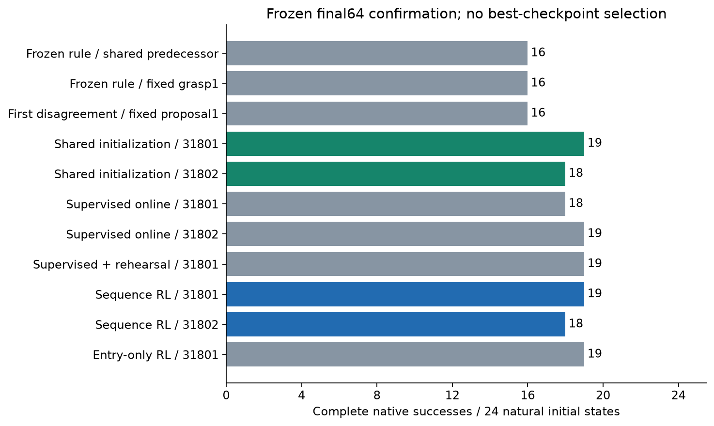
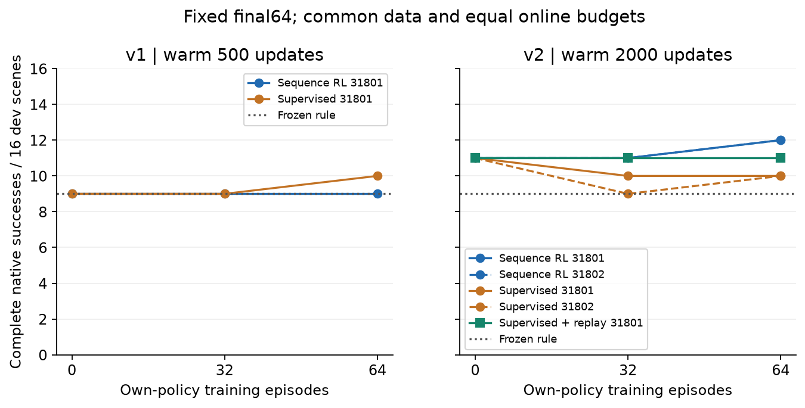
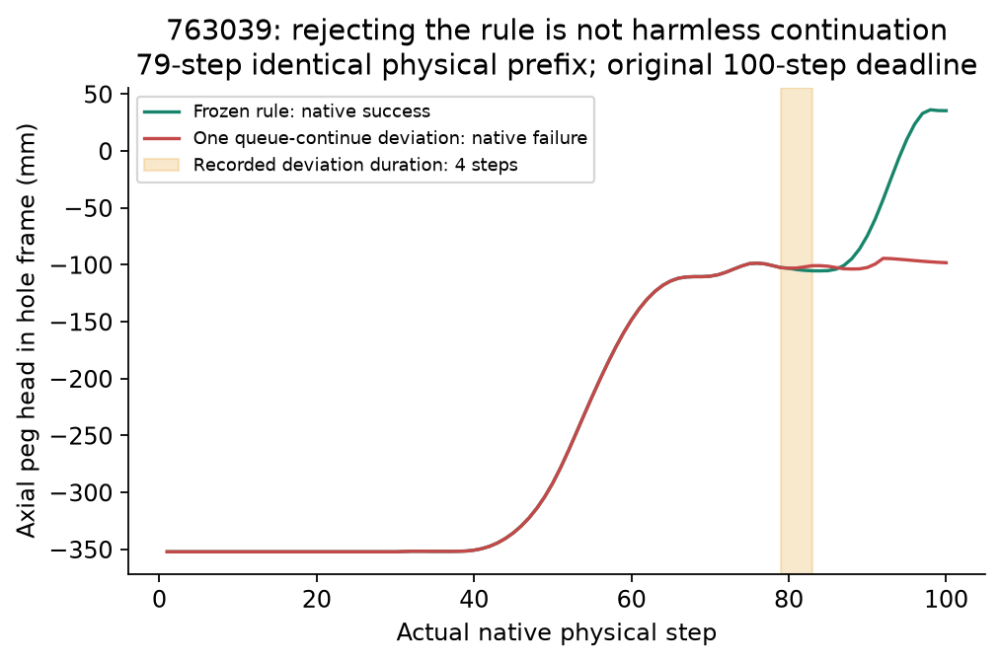

ARES SCI · 2026-11-05 · NATIVE PHYSICS / NO HARDWARE / NO SEALED TESTS
Learned Option adoption above a strong rule
512 own-policy training episodes · two independent initializations · frozen24-scene confirmation
Result attribution: learned conditional adoption reaches19/24 and18/24 versus rule16/24. The shared supervised initializers already achieve the same outcomes. Independent online-RL gain is not established.
Scientific conclusions & reproduction · Recomputed results · Complete costs · Raw data & model SHA · Prior art
Complete native-task comparison
Each confirmation result uses the same24 natural scene groups. Two entries denote neural seeds, not48 independent scenes. All endpoints are final64.
| Method | Dev /16 | Confirmation /24 | Rescue / regression |
|---|
| Frozen rule, shared predecessor | 9 | 16 | 0 / 0 |
| Frozen rule, fixed grasp1 | 9 | 16 | 1 / 1 |
| Frozen complete macro 31701 | 7 | — | — |
| Frozen complete macro 31702 | 10 | — | — |
| Historical Q gate | 8 | — | — |
| Fixed first proposal1 | 11 | 16 | 4 / 4 |
| Shared supervised initialization | 11 / 11 | 19 / 18 | 3/0 ; 3/1 |
| Online supervision | 10 / 10 | 18 / 19 | 2/0 ; 3/0 |
| Supervision + shared-data rehearsal | 11 | 19 | 3 / 0 |
| Online sequence RL | 12 / 12 | 19 / 18 | 3/0 ; 3/1 |
| Entry-only RL ablation | 12 | 19 | 3 / 0 |
Full macros and Q gate were tested on development only. Rescue/regression is relative to the shared-predecessor rule. Fixed-grasp1 also changes the actual predecessor.
Where the benefit comes from

Supervised initialization and ordinary rehearsal explain the confirmed advantage. The proposed waiting-credit mechanism was inactive in all nonzero updates of its ablation seed.

Physical counterexamples

Physical action0 continues the active queue. Gate rejection must instead execute the strong rule's current action.
Transfer and retained engineering
Tool's early-contact fallback discarded the nominal continuation. The corrected adapter preserves all8 nominal100-step traces, and three declined interventions preserve their complete original trajectories. Corrected results are3/8 nominal,3/8 feedback and2/8 press: an execution repair, not learned transfer.
1528 complete episodes ·152800 physical steps ·14644 planner queries. All positive and negative runs,40 named weight checkpoints, source variants and transaction records are retained.
Tool physical checks · 310 complete queue/reference comparisons · 112 identical ablation trajectories